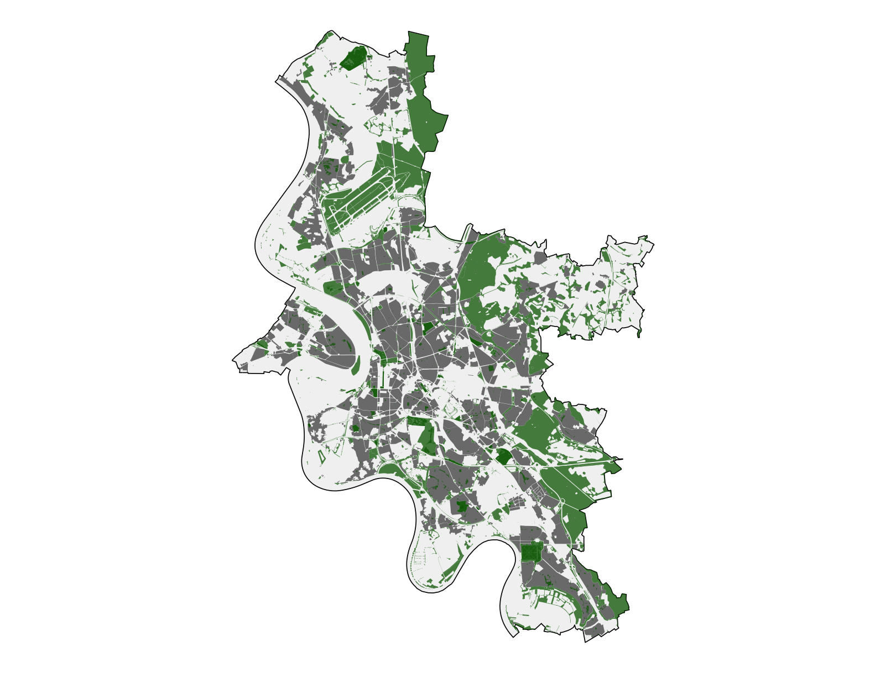

Visual CV · Cologne, Germany
Vedat
Erdem
Ozkul.
Data Analytics · Applied Data Science
Product Insights · AI Automation

and enriched
operationalized
connected
data workflows
What I do
From an ambiguous question to a usable answer.
Explore
Find patterns, inconsistencies, and the questions hidden inside structured and digital data.
Build
Create dashboards, datasets, reports, and repeatable workflows that make the signal visible.
Translate
Connect analytical findings to decisions that product, business, and technical teams can use.
Experience
A career built across disciplines.
03/2026 — NOW
01
Working Student — Corporate Communications & Data / AI Solutions
thyssenkrupp Uhde GmbH · Dortmund
Analyze communication and website data using Matomo and Power BI; define KPI-oriented reporting; prototype AI-enabled knowledge and automation workflows; and build lightweight web solutions during a corporate CMS migration.
Power BIMatomoAzureCopilot StudioHTML/CSS/JS
05/2023 — 02/2026
02
Design, Brand & Marketing Manager
Çamsan Ordu A.Ş. · Türkiye
Led a cross-functional data and process transformation across a 287-dealer network. Built 120+ automated reports across seven functions and converted fragmented CRM, ERP, sales, marketing, and operational needs into structured workflows.
OdooSAPRGoogle AnalyticsBusiness Intelligence
08/2020 — 05/2023
03
Senior Architect
Ordu Metropolitan Municipality · Türkiye
Led 20+ public infrastructure and urban-development projects, aligning multidisciplinary teams and turning complex technical requirements into measurable plans and decision materials.
20+ projectsStakeholder managementDelivery
01/2017 — 08/2020
04
Co-Founder / Architect
ARTITECH Architecture · Istanbul
Co-founded and operated an architecture studio, managing client requirements and complete project delivery across more than 50,000 m² of architecture and interior-design work.
50,000+ m²EntrepreneurshipSystems thinking
03/2016 — 01/2017
05
3D Architectural Designer
MME Architecture · Istanbul
Created 3D architectural visualizations, technical drawings, design concepts, and permit documentation—using spatial analysis to translate how people, functions, and environments interact into clear design decisions.
Spatial analysis3D visualizationArchitectural designTechnical documentation
Selected projects
Work that makes information more useful.
Reading Düsseldorf through data.
I took raw Düsseldorf location data, checked and cleaned it, combined separate geographic layers, and turned it into maps that reveal how the city is organized. The map is not the end product—it makes complex place data usable for questions people and businesses can act on.
Starting pointOpen city dataTransformationRaw records → usable mapsOutcomeInsights + research question

Observed pattern
Green areas are distributed across the city, but their concentration varies.
Observed pattern
Residential areas and roads form a denser structure around the urban core.
Usable feature
Distance to recreation areas can be measured for each residential location.
PLANNED THESIS DIRECTION
Does access to recreation areas correlate with residential rent and sale values?
My next step is to combine the accessibility measures from this project with Düsseldorf housing-market data. The aim is to test whether location patterns help explain differences in property values—without assuming that proximity alone causes those differences.
FROM INSIGHT TO BUSINESS VALUE
Full analysis on RPubs ↗This project shows how raw coordinates can become trustworthy features, readable insights, and decision-ready questions—useful for market analysis, product decisions, recommendations, or location-content quality.
AI-powered language learning dataset
I turned approximately 3,500 fragmented German vocabulary records into a structured learning dataset. Python and Pandas handled the repeatable data work; locally hosted Ollama models added language context without sending the source data to an external AI service.
- AI runtime
- Ollama · local LLM
- Principle
- Rules first, AI where useful
- Output
- Validated, app-ready records
Profiled missing fields, inconsistent formats, word types, duplicates, and records that needed special handling.
Used Python and Pandas to normalize records, preserve the raw source, create stable identifiers, and classify entries.
Ollama generated examples, grammar attributes, CEFR levels, topic tags, cloze questions, distractors, common mistakes, word families, and derivational relationships.
Schema rules, quality checks, checkpoints, provenance, and a human-review queue kept invalid or uncertain outputs visible.
The result connects words, examples, grammar, relationships, and practice content instead of treating each word as an isolated flashcard.

Python · Pandas · Ollama · Local LLMs · JSON / structured data · Validation · Human review · Web technologies
From website traffic to decisions
I moved website analysis beyond generic traffic reporting by building an end-to-end Matomo, Power BI, and Copilot workflow.
CollectMatomo API → Power BI
Automated the flow of website data into a reusable analytical model.
MeasureTraffic, trends, origin and engagement
Tracked change over time, geographic reach, content performance, and user behavior.
InterpretCompany Copilot agent
Built an agent that interprets the data against a new KPI framework designed around business value.
PresentInteractive Power BI dashboard
Turned the outputs into explorable findings and decision-ready recommendations.
SHIFT IN VALUEFrom “How many visits?” to “What changed, why might it matter, and what should we improve?”
Reporting & process transformation
A reporting infrastructure connecting Odoo, SAP, seven business functions, and a nationwide dealer network—designed around operational questions rather than reporting volume.

Systems→Signals→Decisions
Skills & education
The toolkit behind the work.
Data analysis
Python · Pandas · Jupyter Notebooks · SQL · R / RStudio · Data cleaning · Exploratory analysis
BI & visualization
Power BI · Matomo · Google Analytics · Excel · KPI design · Dashboard development
AI & automation
LLMs · Microsoft Azure · Copilot Studio · n8n · Power Automate · Structured data workflows
Product & business
Business analysis · Product insights · Requirements · Performance analysis · Project documentation
EDUCATION / 01
M.A. Data Analysis & Decision-Making
International Management
Hochschule Fresenius, Cologne
EDUCATION / 02
Bachelor of Architecture
Istanbul Technical University
2011 — 2016Role match dashboard
CV evidence vs. the role.
This section compares the experience above with one specific opportunity. It is separate from the personal portfolio.
Compared withStudent Data Scientist — Content
Strong
Python, Pandas & Jupyter
Applied in the 3,500-record data pipeline; SQL is at working-knowledge level.
12/15Strong
Business analysis & documentation
Decision-oriented analyses and structured project documentation across roles.
10/10Strong
Data exploration & insight
Pattern detection across customer, sales, market, process, and digital data.
10/10Strong
KPIs & process improvement
120+ reports built across seven functions with business and IT stakeholders.
10/10Adjacent
Content dashboards
Direct Power BI and Matomo experience; hotel content is a new domain.
8/10Strong
Data quality & detail
Inconsistencies converted into explicit cleaning rules and improvements.
10/10Strong
AI & automation
Local LLMs, Azure, Copilot Studio, and workflows with human guardrails.
10/10Strong
Communication & ownership
Cross-functional leadership and self-directed technical delivery.
10/10Strong
German university enrollment
Full-time M.A. student at Hochschule Fresenius through March 2028.
10/10Strong
Location & geospatial data
Reproducible Düsseldorf OSM workflow covering spatial layers, geometry checks, CRS alignment, and distance-based accessibility features.
5/5Develop
Hotel-content domain
Direct hotel-content experience is the remaining domain ramp-up; the underlying location-data workflow is demonstrated above.
OpenMethod: transparent applicant-side self-assessment based only on CV evidence—not a trivago or ATS score.
Official role ↗Beyond the toolkit
Curiosity has more than one form.
Architecture taught me systems thinking. Business taught me impact. Data brought those two instincts together. Outside work, I explore cultures through travel, produce music in FL Studio, and have competed as a national champion in bachata.
Contact